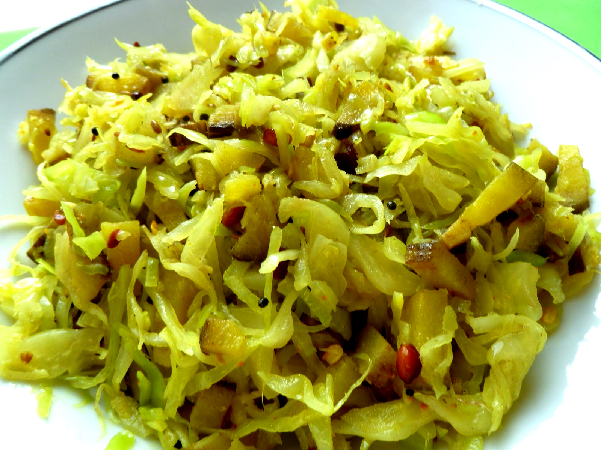

Ingredients:
1)1 small cabbage (chopped finely)
2)1 medium sized potato (cut in cubes)
3)1 onion (chopped)
4)1 tomato (Chopped)
5)1 tblsp ginger garlic paste
6)1 tsp cumin seeds
7)1 tsp turmeric powder
8)1 tsp coriander powder
9)1 tsp red chilly powder
10)salt to taste
11)cooking oil
How to make Indian cabbage and potato:
1.Heat oil in a wok or kadai.Add cumin seeds and let it splutter.Then add onions and ginger garlic paste.Fry till golden brown.
2.Add chopped tomatoes ,turmeric powder and rest of the powdered spices except salt.
3.Mix well and cook till oil separates.
4.Add cubed potatoes and stir fry for few minutes and then add chopped cabbage and salt.mix well.Cook it covered till the vegetables are done and water evaporates.
5.Serve hot with chapatis or parathas.